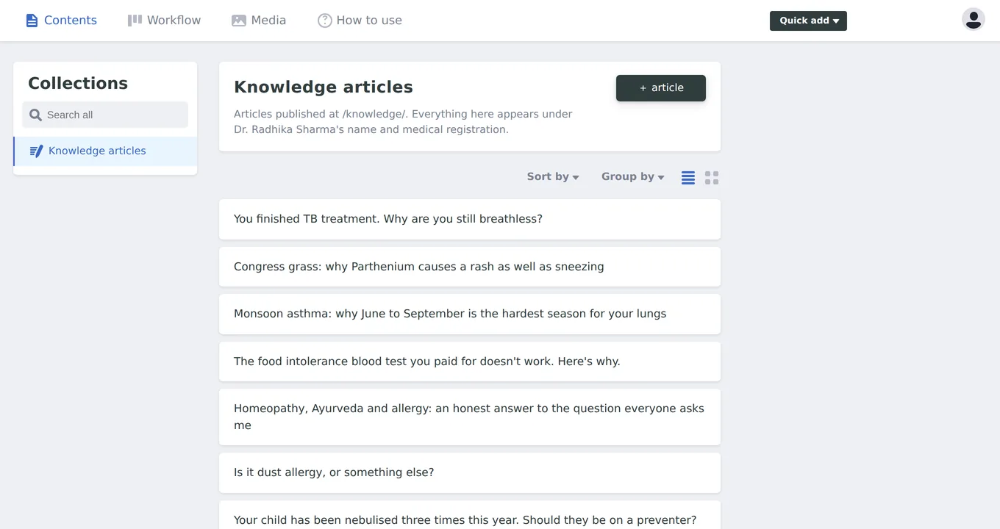
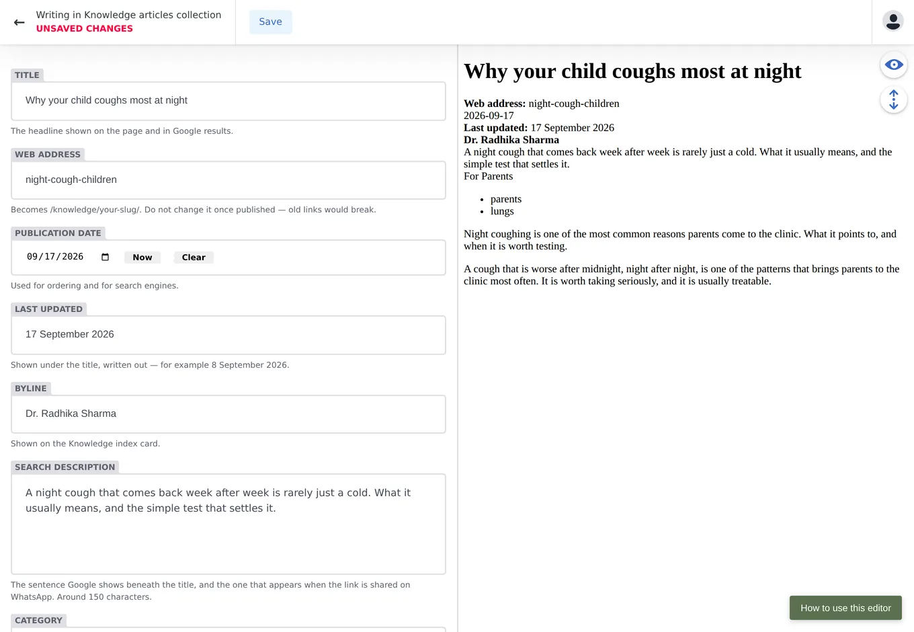
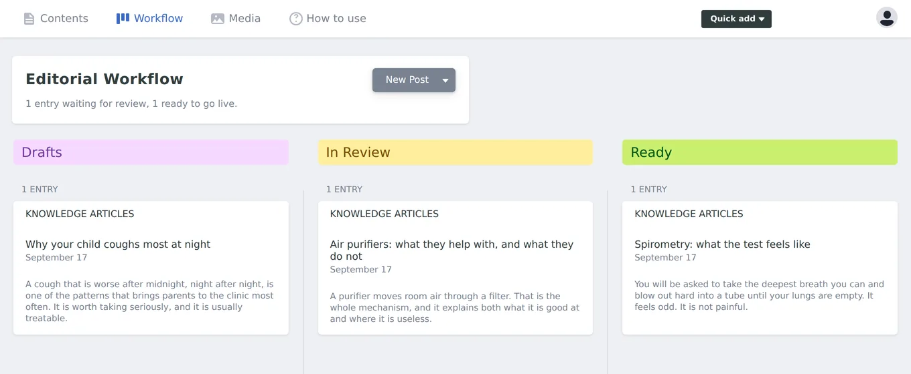

Everything you need to write a Knowledge article and get it published, in the order you will actually need it.
The editor lives at /admin/ on the clinic's website. Nothing on
the public site links to it, so bookmark it the first time you visit.
You will see a single button, Login with Netlify Identity. Use the email address your invitation was sent to, and the password you set when you accepted it. There is no second login screen after that — if you find yourself looking at a login button again, you are not signed in yet.
Lost your password? Use the link on the sign-in dialog. The reset email arrives from Netlify, not from the clinic, so check your spam folder.

On the left, Collections lists what you are allowed to edit. There is one entry, Knowledge articles, and that is deliberate. The service pages, the prices, the contact details and the booking form are not editable here — changing those needs a developer, which means you cannot break them by accident.
Press + article on the Contents tab. The screen splits in two: the form on the left, and a live preview of the finished page on the right, which updates as you type.

Work down the form. Every field except the ones marked (optional) has to be filled in before the article can be saved; if you press Save and nothing happens, scroll up and look for the box outlined in red.
The Article box at the bottom is where the writing goes. Use Heading 2 for sections and Heading 3 beneath them. Plain prose reads best here — the site is written to sound like a doctor explaining something, not like marketing copy.
| Title | The headline on the page and in Google results. |
|---|---|
| Web address | Becomes /knowledge/your-slug/.
Lower case and hyphens only. |
| Publication date | Used for ordering and for search engines. Press Now for today. |
| Last updated | Shown under the title, written out in full — for example 17 September 2026. |
| Byline | Shown on the Knowledge index card. |
| Search description | The sentence Google shows beneath the title, and the one that appears when the link is shared on WhatsApp. Between 80 and 165 characters — about one and a half lines. Anything longer is refused, because Google would cut it off anyway. |
| Category | The small grey label above the title. One only, and a different thing from the filter tags below it. |
| Filter tags | The filter buttons the article appears under. Add as many as apply — and see below on inventing a new one. |
| Index summary | The paragraph shown on the Knowledge index. Two or three sentences. |
| Feature at the top | Lifts the article to the top of the Knowledge page. |
| In a nutshell | Optional. The summary box at the top of the article — four or five short points. |
| Buttons at the end | Optional, and empty to begin with. Every button you add needs all three parts filled in: the words on it, where it goes, and whether it is filled or outlined. |
| Sources | Optional. Guidelines or published research the article draws on. |
Two things that are hard to undo.
The web address is permanent. Once an article is live, people and search engines have that link. Changing it later breaks every one of them. Get it right before publishing, and leave it alone afterwards.
Only one article should be featured. If several are switched on, the newest one wins and the others quietly stop being featured — so switch the old one off when you promote a new one.
The tags in use are allergy, lungs,
tests, hyderabad and parents. Type one
of those exactly and the article joins that filter button on the Knowledge
page.
You can also type a tag nobody has used before. The Knowledge page grows a
new filter button for it by itself, next to the existing ones, the next time
the site is built — no developer needed. The button is named after the tag,
so indoor-air becomes a button reading Indoor air.
Because a new tag makes a new button, spelling counts.
allergy and allergies would become two separate
buttons splitting the same articles between them. Tags are lower case, with
hyphens instead of spaces.
Saving does not put anything on the website. It files the article away as work in progress, and it is safe to do as often as you like. Saved articles appear on the Workflow tab.

Each article sits in one of three columns, and you move it along as it progresses:
When an article is genuinely ready, open it and press Publish. That is the moment it goes on the website. It takes a minute or two to appear, because the site is rebuilt each time.
Publish is live, immediately and for everyone. The three columns are a way of keeping track of work, not a lock — the editor will not stop you publishing something nobody else has read.
Every article carries Dr. Radhika's name and medical registration number. Please leave anything clinical in In Review until she has read it.
Drag an image straight into the Article box, or use the + button in the editor toolbar. It is uploaded with the article and stored in the site's media library, so you can reuse it later from the Media tab.
Photographs of patients need written consent before they go anywhere near the site. If you are not certain consent exists, do not upload the picture.
If the editor does not finish loading, wait about ten seconds. Rather than spinning forever, the page will print a short report saying exactly what failed. Copy that text and send it to whoever looks after the site — it is far more useful than a screenshot of a blank page.
If you are signed in but nothing saves, a field is failing its check. Scroll up and look for the red outline — the message beside it says what is wrong. The two that catch people most often: